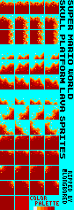
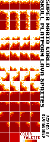
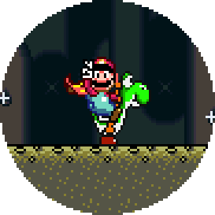
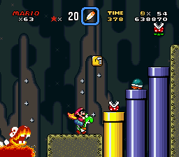

Super Mario World Skull Platform Lava Sprites
I couldn't find the sprites for a certain type of lava from Super Mario World anywhere on the internet. Sure, the standard non-moving, bubbling, lava is out there, but I wanted the lava that skull platforms ride on. So, I went and ripped them, and I'm sharing them here, because I can.
One has a background color, and one has a transparent background. Both are PNGs, so there won't be any loss of quality, regardless.
 
You might not know which piece you want, so I thought an animation would be helpful. Here they are, in the same order (top to bottom), and you can see which element you want. They're both .gif's, so don't use them for pixel accuracy:
And lastly, just to show you that it actually works, here are the various pieces put together, to form some random thing, which I think uses them all:
(that's also a .gif. Use the PNGs that I showed first to get the actual sprites)
Wait a second. Why did you do this?
I know. This is nerdy, and a rather small niche to care about. Some of you are going to ask (as my wife has, repeatedly), "Why?" Because there was a hole in the internet, and I wanted to give something back. I love that video game sprites are available online, but somebody had to extract all of them at some point.
Why did I care/notice to begin with? Now we're going to get to an even smaller niche. I wanted to recreate the following scene (at the exact pixel count)... so I could make a counted cross stitch pattern of one of my favorite levels in Super Mario World - Vanilla Dome 3. Here is a super simple scene I was hoping to recreate (at original, and magnified sizes):

Imagine that thing on some black fabric, so it looks like it's doing that zoom in/out thing that it does at the end of a level. It's so perfect! Don't tell me you're not somewhat jealous. This is the intersection of video game nerd, computer nerd, and being somewhat craft-inclined. Welcome to my life. Here are some of the details, or sites I used to help me get here:
- MarioUniverse.com - Just one of many similar sites for finding the sprites to various games.
- SMWCentral.net - My mind basically melted at discovering that this site not only exists, but is flourishing... for a video game that is 20 years old.
- Lunar Magic - The crowning jewel of that site. A program, still in active development, to help you modify the Super Mario World ROM... or to just see the sprites.
- Pixen - A perfect pixel editing program for OS X. As nice as soft lines are everywhere else, when you're messing with sprites, pixel perfection is a necessity.
- Super Mario World Font Set - Thankfully, Patrick H. Lauke recreated the fonts used in this game. With the outlines on the letters (like they have in the header of the game), the spacing is 1 pixel off, but that is easily adjusted.
- Super Mario World ROM - You'll need this. No, I'm not going to post the ROM here, since I don't need NOA on me, but it's out on the internet, and not very hard to find.
I couldn't get the colors to work out right on the pattern, though the pattern I attempted at MyPhotoStitch.com wasn't nearly as bad as the version I created in KG Chart. I've shared the .pdf below, if you care.
Lastly, this was also on my way to create the most typical scene I could think of from Vanilla Dome 3. It'd be really fun to have a stitched version of this whole scene, but I can't convince myself it's worth 57,344 stitches, at least not right now. That said, here is the scene I completely recreated in Pixen (again, at original, and scaled sizes):


Lastly, I've attached the Pixen file of this last scene. I don't know if it'll be of use to anyone, but you can use it however you want.
Super Mario World Skull Platform Lava Sprites Files...
- Prior: Wii Hacking Links
- Next: G2 20190214